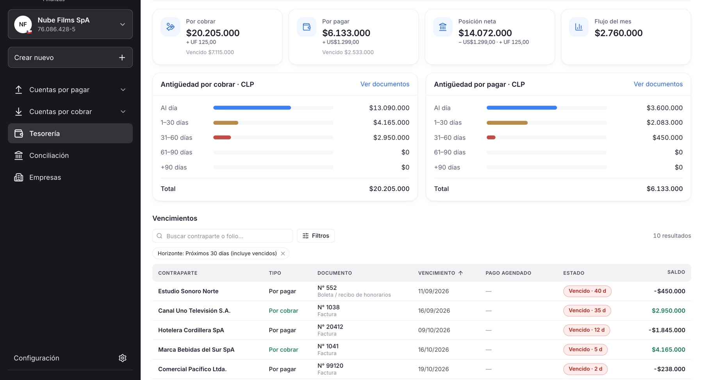
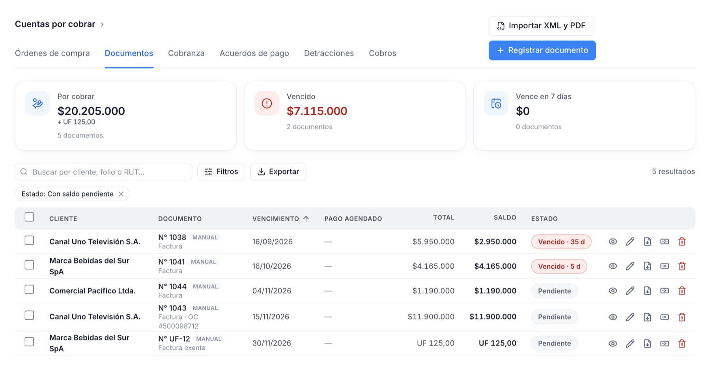
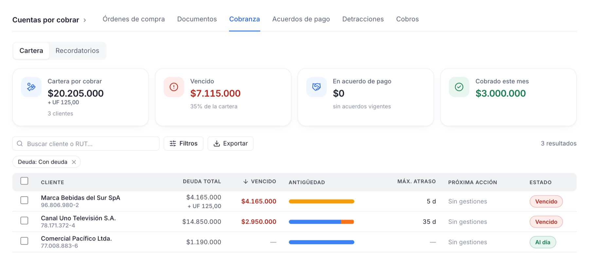
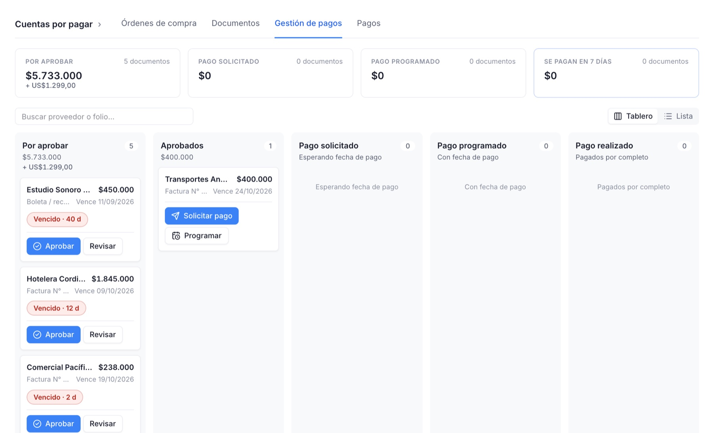

Cuentas por cobrar, por pagar y tesorería en un solo lugar.
Para empresas en Chile, Perú y México. Documentos, pagos, cobranza, conciliación bancaria y portal para tus clientes, en una sola plataforma.

Sube los XML y PDF, y los documentos se registran solos.
Las facturas del SII, los comprobantes de SUNAT y los CFDI del SAT se importan juntos con sus PDF. Se registran sin duplicar y cada PDF queda unido a su documento por nombre o folio.
También puedes registrar facturas, notas de crédito y débito, boletas, honorarios e invoices a mano, y ver su estado: pendiente, parcial, vencido o pagado.

La cobranza no depende de que alguien se acuerde.
Programas los recordatorios una vez: antes del vencimiento, el día, después, o en un resumen semanal. Cada cliente tiene su ficha con documentos, correos enviados y responsable.
Si un cliente acuerda pagar en cuotas, el acuerdo queda registrado y esos documentos dejan de contarse como morosos mientras esté vigente.

Las facturas de proveedores pasan por aprobación antes de pagarse.
Cada documento avanza por un tablero: por aprobar, aprobado, pago solicitado, pago programado y pagado. Los proveedores reciben un aviso por correo cuando se les paga.
Las órdenes de compra llevan su saldo por facturar y se envían al proveedor en PDF.

Cada país con sus reglas
Una misma cuenta puede administrar empresas de distintos países. Los montos se guardan en su moneda y nunca se suman entre monedas distintas.
| País | Identificación y documentos | Impuesto y moneda | Lo particular |
|---|---|---|---|
| CLChile | RUT. DTE del SII por XML y PDF. | IVA 19 %. CLP y UF. | Sincroniza compras y ventas del SII y conecta cuentas bancarias con Fintoc. Ver Chile |
| PEPerú | RUC. Comprobantes de SUNAT por XML y PDF. | IGV 18 %. PEN. | Detracciones (SPOT) con constancias de depósito, Contable.pe y Yape/Plin. Ver Perú |
| MXMéxico | RFC. CFDI 3.3 y 4.0, por UUID, desde XML. | IVA 16 %. MXN. | Bancos mexicanos y SPEI como forma de pago. Ver México |
Lo que también incluye
- Conciliación bancaria
- Cuentas conectadas en Chile o cartolas en Excel/CSV en los tres países, con sugerencias automáticas.
- Pagos con MercadoPago
- Link de pago en cada documento. El pago se registra cuando MercadoPago lo confirma.
- Portal para clientes
- Tus clientes y proveedores ven sus documentos y pagos con el logo de tu empresa.
- Varias empresas
- Un usuario, varias empresas, con roles de dueño, administrador, finanzas y solo lectura.
Lo que no hace
No emite facturas electrónicas. Registra y gestiona las que emites con tu sistema de facturación, importándolas por XML o sincronizándolas, según el país.
Tampoco se conecta directo a SUNAT ni al SAT: en Perú usa Contable.pe y en México importa los CFDI por XML.
¿Lo vemos con tu operación?
Agenda una demo y revisamos cómo quedaría tu empresa en Produ Finanzas.